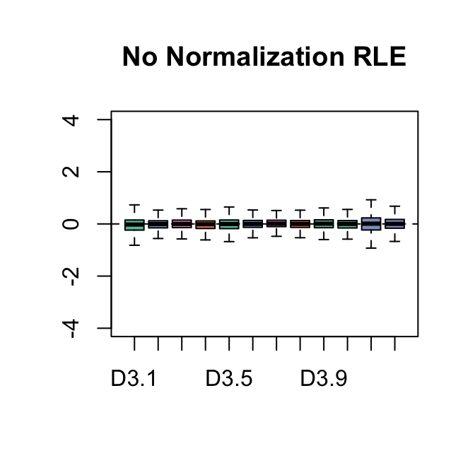
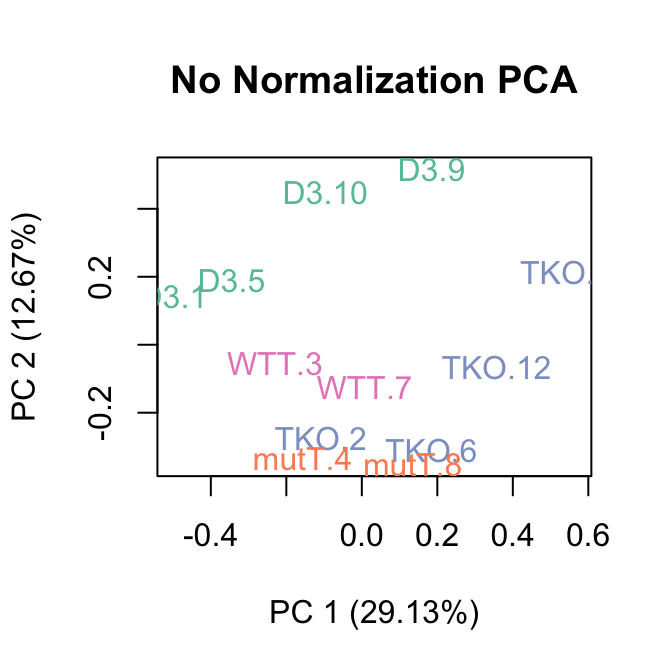
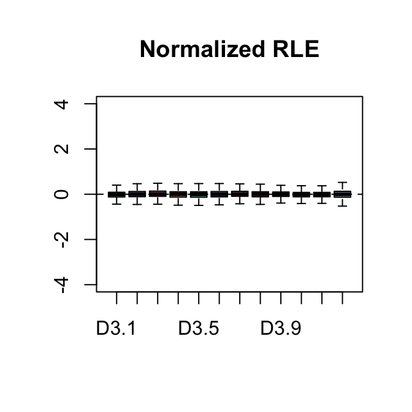
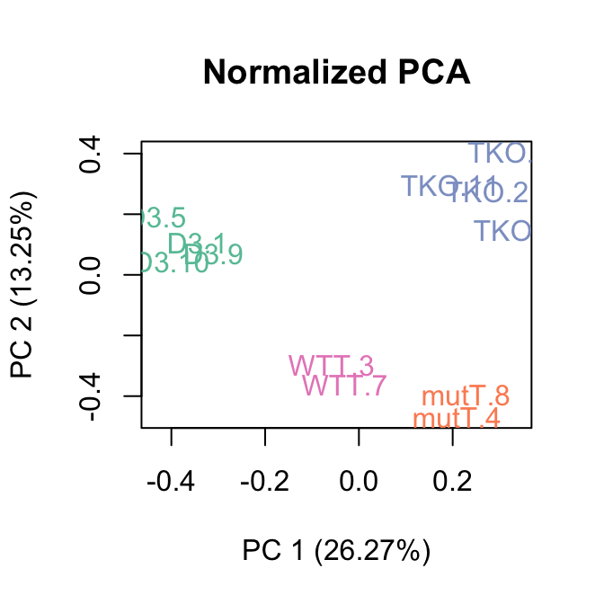
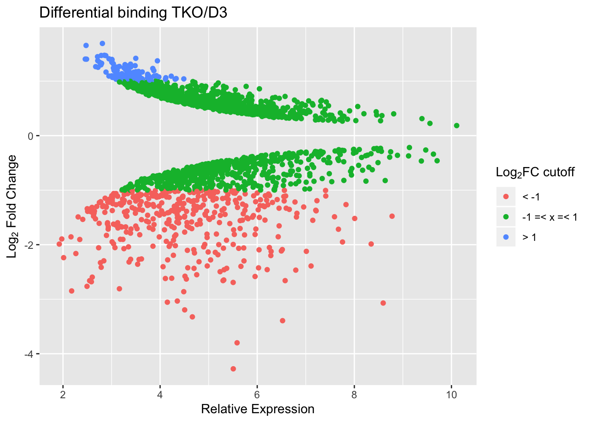
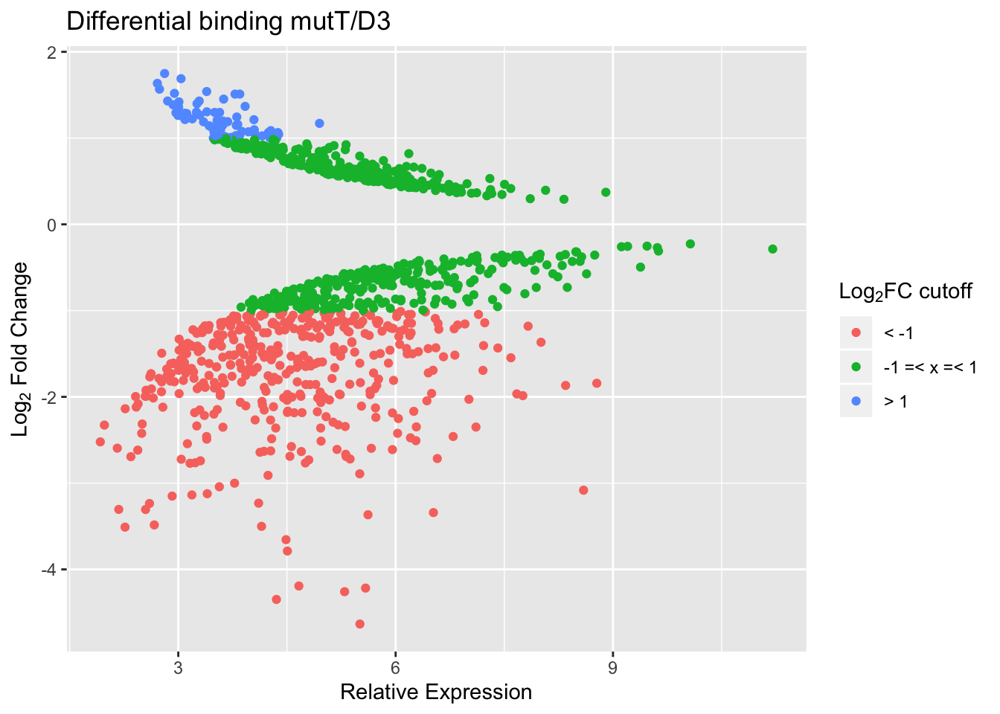
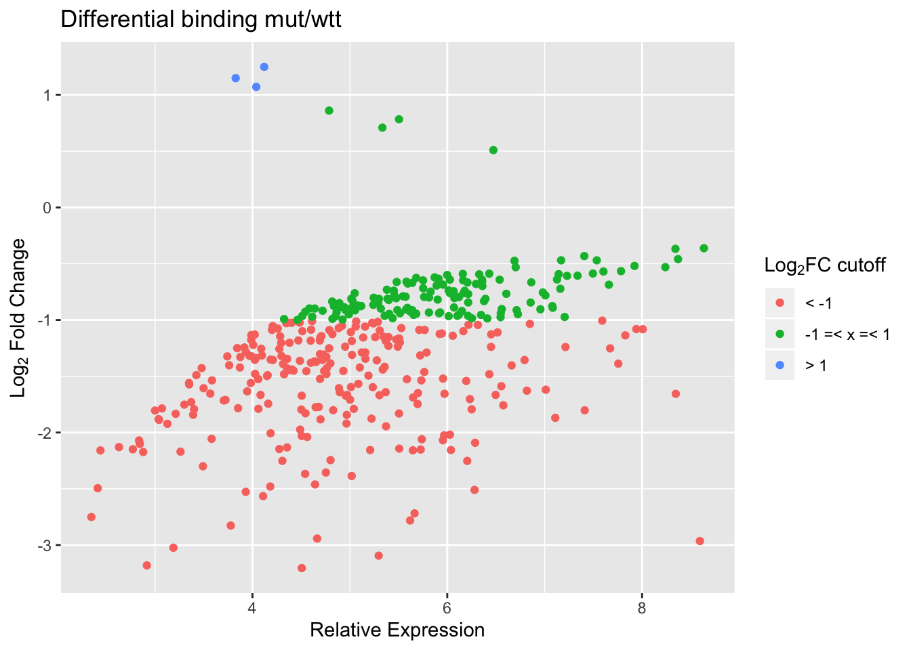

Count reads on consensus peaks using the function countBamInGRanges from package exomeCopy. The set of peaks to use is defined by D3 and WTT samples and is loaded from an RData object.
The total number of peaks considered is 41215
The boxplots of relative log expression (RLE = log-ratio of read count to median read count across sample) and plots of principal components (PC) reveal a clear need for between-sample normalization.

The parameter k dictates the number of factors of unwanted to variation to remove, in this case we use 3. We can see in the PCA plot that after RUVs normalization the first 2 principal components seperate the four groups indicating that the treatment is NOW the major source of variation.

Now, we are ready to look for differentially enriched regions, using the negative binomial quasi-likelihood GLM approach implemented in edgeR (see the edgeR package vignette for details). This is done by considering a design matrix that includes both the covariates of interest (here, the treatment status) and the factors of unwanted variation.
With a cut-off FDR < 0.05, we find the following numbers of peaks with reduced/increased binding in TKO vs D3.
| log2FC±0 | log2FC±1 | log2FC±2 | |
|---|---|---|---|
| reduced | 943 | 393 | 76 |
| increased | 983 | 117 | 0 |
Simple MA plot.

With a cut-off FDR < 0.05, we find the following numbers of peaks with reduced/increased binding in mutT vs D3.
| log2FC±0 | log2FC±1 | log2FC±2 | |
|---|---|---|---|
| reduced | 698 | 415 | 107 |
| increased | 355 | 74 | 0 |

With a cut-off FDR < 0.05, we find the following numbers of peaks with reduced/increased binding in mutT vs TKO. (Reduced means lost in mutT with respect of TKO). There are no peaks with increased binding in mutT with respect to TKO.
| log2FC±0 | log2FC±1 | log2FC±2 | |
|---|---|---|---|
| reduced | 4 | 2 | 0 |
| increased | 0 | 0 | 0 |
With a cut-off FDR < 0.05, we find the following numbers of peaks with reduced/increased binding in mut vs wtt.
| log2FC±0 | log2FC±1 | log2FC±2 | |
|---|---|---|---|
| reduced | 373 | 238 | 46 |
| increased | 7 | 3 | 0 |
Simple MA plot.

## R version 3.6.1 (2019-07-05)
## Platform: x86_64-apple-darwin15.6.0 (64-bit)
## Running under: macOS Mojave 10.14.6
##
## Matrix products: default
## BLAS: /Library/Frameworks/R.framework/Versions/3.6/Resources/lib/libRblas.0.dylib
## LAPACK: /Library/Frameworks/R.framework/Versions/3.6/Resources/lib/libRlapack.dylib
##
## locale:
## [1] en_GB.UTF-8/en_GB.UTF-8/en_GB.UTF-8/C/en_GB.UTF-8/en_GB.UTF-8
##
## attached base packages:
## [1] parallel stats4 stats graphics grDevices utils datasets
## [8] methods base
##
## other attached packages:
## [1] exomeCopy_1.30.0 ggplot2_3.2.1
## [3] tidyr_1.0.0 kableExtra_1.1.0
## [5] statmod_1.4.32 RUVSeq_1.18.0
## [7] edgeR_3.26.8 limma_3.40.6
## [9] EDASeq_2.18.0 ShortRead_1.42.0
## [11] GenomicAlignments_1.20.1 SummarizedExperiment_1.14.1
## [13] DelayedArray_0.10.0 matrixStats_0.55.0
## [15] Rsamtools_2.0.2 Biostrings_2.52.0
## [17] XVector_0.24.0 BiocParallel_1.18.1
## [19] Biobase_2.44.0 DEScan2_1.4.0
## [21] GenomicRanges_1.36.1 GenomeInfoDb_1.20.0
## [23] IRanges_2.18.3 S4Vectors_0.22.1
## [25] BiocGenerics_0.30.0 RColorBrewer_1.1-2
## [27] knitr_1.25
##
## loaded via a namespace (and not attached):
## [1] colorspace_1.4-1 seqinr_3.6-1 hwriter_1.3.2
## [4] futile.logger_1.4.3 rstudioapi_0.10 ChIPpeakAnno_3.18.2
## [7] bit64_0.9-7 AnnotationDbi_1.46.1 xml2_1.2.2
## [10] splines_3.6.1 R.methodsS3_1.7.1 DESeq_1.36.0
## [13] geneplotter_1.62.0 zeallot_0.1.0 ade4_1.7-13
## [16] annotate_1.62.0 GO.db_3.8.2 R.oo_1.22.0
## [19] graph_1.62.0 BiocManager_1.30.7 readr_1.3.1
## [22] compiler_3.6.1 httr_1.4.1 backports_1.1.5
## [25] assertthat_0.2.1 Matrix_1.2-17 lazyeval_0.2.2
## [28] formatR_1.7 htmltools_0.4.0 prettyunits_1.0.2
## [31] tools_3.6.1 gtable_0.3.0 glue_1.3.1
## [34] GenomeInfoDbData_1.2.1 dplyr_0.8.3 Rcpp_1.0.2
## [37] vctrs_0.2.0 multtest_2.40.0 rtracklayer_1.44.4
## [40] xfun_0.10 stringr_1.4.0 rvest_0.3.4
## [43] lifecycle_0.1.0 ensembldb_2.8.1 XML_3.98-1.20
## [46] idr_1.2 zlibbioc_1.30.0 MASS_7.3-51.4
## [49] scales_1.0.0 aroma.light_3.14.0 BSgenome_1.52.0
## [52] hms_0.5.1 ProtGenerics_1.16.0 RBGL_1.60.0
## [55] AnnotationFilter_1.8.0 lambda.r_1.2.4 yaml_2.2.0
## [58] curl_4.2 memoise_1.1.0 biomaRt_2.40.5
## [61] latticeExtra_0.6-28 stringi_1.4.3 RSQLite_2.1.2
## [64] highr_0.8 genefilter_1.66.0 GenomicFeatures_1.36.4
## [67] rlang_0.4.0 pkgconfig_2.0.3 bitops_1.0-6
## [70] evaluate_0.14 lattice_0.20-38 purrr_0.3.2
## [73] labeling_0.3 tidyselect_0.2.5 bit_1.1-14
## [76] plyr_1.8.4 magrittr_1.5 R6_2.4.0
## [79] DBI_1.0.0 withr_2.1.2 pillar_1.4.2
## [82] survival_2.44-1.1 RCurl_1.95-4.12 tibble_2.1.3
## [85] crayon_1.3.4 futile.options_1.0.1 rmarkdown_1.16
## [88] progress_1.2.2 locfit_1.5-9.1 grid_3.6.1
## [91] data.table_1.12.2 blob_1.2.0 digest_0.6.21
## [94] webshot_0.5.1 xtable_1.8-4 VennDiagram_1.6.20
## [97] regioneR_1.16.5 R.utils_2.9.0 munsell_0.5.0
## [100] viridisLite_0.3.0